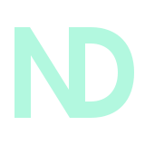
The N and D share one upright. A straight diagonal meets a rounded outer bowl, making a compact two-letter signature.
One growing collection. The newest directions use fewer parts, clean cuts, and simple geometry. Earlier ideas stay here for comparison.
Showing 28 concepts · newest first


The N and D share one upright. A straight diagonal meets a rounded outer bowl, making a compact two-letter signature.
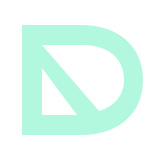
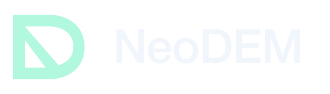
A D-shaped shell contains an N in its negative space. Two carefully separated counters give the letters one continuous silhouette.
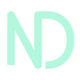
One open line writes N and D together. Rounded turns and a deliberate opening at the baseline keep the monogram light and precise.
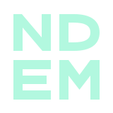
N and D sit above E and M in a compact square. Consistent widths and narrow seams make the four letters read as one typographic block.
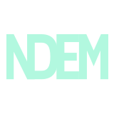
All four capitals share structural strokes in one horizontal signature. A compact word-symbol designed for a robot chassis or product masthead.
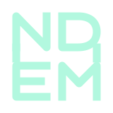
A linked monoline construction draws N and D over E and M. Shared verticals make it feel like one engineered sign, with open channels between the letters.
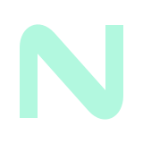
One continuous N ribbon, with curved returns and a taut diagonal. A compact signature with the feel of a formed physical part.
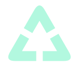
Three folded corners frame one triangular aperture. Precise gaps keep each plane distinct while the whole suggests a cycle of data, models, and machines.
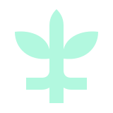
A sculpted canopy opens around a branching trunk. Three squared roots bring a quiet digital edge to the organic silhouette.
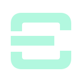
Three offset bands wrap around the same open center. A quiet, architectural mark that suggests depth and coordinated motion.
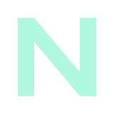
A single angular ribbon forms an N. Two precise cuts and one diagonal give it a fast, compact silhouette.
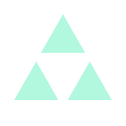
Three clean triangular planes around one empty center. A stripped-back continuation of the Triforce-inspired direction.
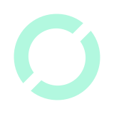
Two offset semicircular bands form an orbital O. A diagonal seam suggests a system shifting from data into motion.
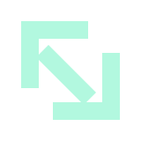
Two opposed corners define an open frame. A diagonal connection turns the empty center into an abstract N.
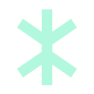
A tree reduced to a single branching glyph. Three branches become three roots, with no dots, crown, or circuit ornament.
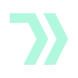
Two separated bends create a forward-moving channel. The same simple unit repeats as data becomes action.
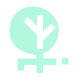
A full, circular crown with a tree cut into it. The trunk continues into three squared roots: organic above, digital below.
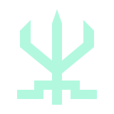
A tree reduced to three rising blades and a branching foundation. The squared root ends echo machined parts rather than circuit-board decoration.
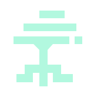
An asymmetric canopy built from broad terraces. A forked trunk becomes a pair of stepped roots, giving the mark the feel of a small architectural seal.
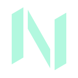
An N assembled from two upright planes and one diagonal. Small separation cuts reveal the construction, like parts joining into one machine.
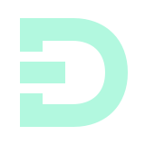
A substantial D with an open entrance and a separate inner block. It frames the transition from information into physical action.
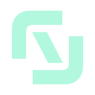
Two mirrored structures interlock across a central gap. One shared system, two physical forms; a compact symbol with an implied N in the space between.
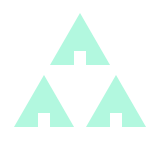
Inspired by the Triforce’s three-part arrangement. Three separated triangles carry squared entry cuts: data, models, and machines connected through the central space.
A simple rounded tree canopy meets three circuit roots. The roots connect intelligence to data, models, and physical machines.
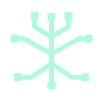
A fully digital tree: stepped branches above, mirrored circuit roots below. A single trunk ties learning and deployment together.
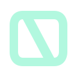
A bold N folded into a continuous loop. The simplest silhouette in the set, connecting the product initial with the Embodied Loop.
An evolution of the current atom-and-processor idea. Open orbital paths surround a solid processor core, without a background mask.
Three different physical forms share one core. A circle, square, and triangle make embodiment diversity visible in a compact symbol.